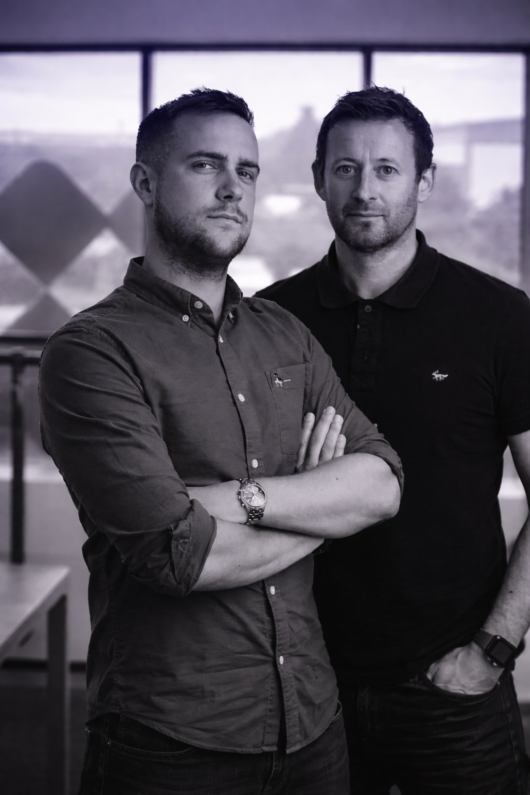

01 · Biography
Richard Ardis
Career built on understanding audiences and crafting propositions that convert — starting at Classic FM in London, then twelve years at Global in commercial radio’s most competitive market: Group Head, Account Director in London leading a 15-strong team for clients including P&G, Unilever and Tesco, and finally Managing Director of Capital FM East Midlands. Along the way: Gold for Best Media Idea at the 2015 Media Week Awards, and Campaign’s Cross Media Sales Team of the Year, 2013.
In late 2021, co-founded We Are Fulfilment with Trent Peek — a VC-backed e-commerce 3PL grown from a standing start to £4.8m revenue in three years. Led commercial strategy, brand positioning and the external narrative — sales collateral, investor communications, partnerships with high-growth consumer brands across FMCG, fashion, wellness and homeware — through five institutional funding rounds and a FEBE Growth 100 place. The company closed in March 2026.
Now co-founder of Woodlark Associates: workflow-first AI adoption for SMEs and mid-market firms, proven on our own company first. Leads the change side of every engagement — leadership alignment, team readiness, communication, and the cultural landing that determines whether AI sticks. Grounded in operating a business that runs day to day on 30+ governed AI agents.
Working style: clarity over noise. A father first; builds businesses people believe in — and helps their people believe in what’s changing.

02 · The record
2000 – 06
Classic FM, London — commercial career foundations in national radio.
2007 – 18
Global — Group Head, then Account Director (London), then Managing Director of Capital FM East Midlands.
2021 – 26
Co-founded We Are Fulfilment. Led commercial strategy, brand and the external narrative through five funding rounds.
2026 —
Co-founded Woodlark Associates — leads the change and adoption side of AI engagements.
Awards
Gold, Best Media Idea — Media Week Awards 2015 · Campaign Cross Media Sales Team of the Year 2013 · FEBE Growth 100 2024.
Education
MSc Business Management, University of Stirling · BA (Hons) English Literature, Ulster University · Leadership Trust.
AI doesn’t fail on the technology. It fails on the landing.